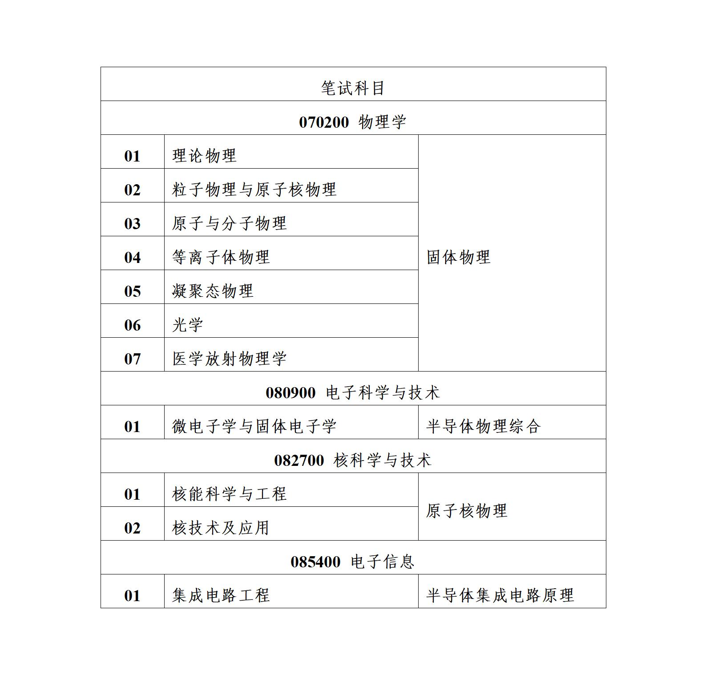

学院通知 · 考试安排
四川大学物理学院2025年硕士研究生招生复试通知
发布时间：2025-03-17
根据川大研〔2024〕37号 关于印发《四川大学研究生复试录取工作办法（2024年修订）》的通知有关规定，经学院硕士研究生招生工作小组研究，今年我院硕士研究生招生复试采取线下形式，具体安排如下： 为便于通知复试相关事项，请考生于2025年3月19日之前加入“川大物院2025硕士复试”QQ群，QQ群号为1036356201，申请加群验证为“姓名-身份证后四位”。 一、复试时间安排 1.报到、审查资格： 报到时间：2025年3月24日上午9:00-11:30 报到地点：物理学院研究生办公室（望江校区物理馆113室） 注意事项：考生可凭本人有效身份证、准考证进入校门。 2.笔试： 笔试时间：2025年3月24日下午14:00-17:00 笔试地点：另行通知 笔试形式：闭卷考试 笔试科目：见物理学院2025年硕士研究生招生目录 注意事项：笔试时需出示准考证和身份证。 3.综合面试与英语口试： 面试时间：2025年3月25日（具体时间段另行通知） 面试地点：另行通知 4.体检： 拟录取名单公示后，在二级甲等及以上医院（1寸照片贴体检表）或四川大学校医院（仅限本校应届生）体检。 体检表交回时间：拟录取公示后7个工作日内。 体检表交回地点：物理学院研究生办公室（望江校区物理馆113室）。 二、复试报到所需材料 考生复试时须携带准考证、有效身份证件、毕业证和学位证（应届生带学生证）以及本科成绩单（需加盖鲜章，应届生请准备前三年的成绩）。 报考“退役大学生士兵”专项招生计划的考生还应提供《入伍批准书》和《退出现役证》。 凡申请享受照顾政策的考生，须在学校规定时间内提交《2025年四川大学硕士研究生入学考试照顾政策考生申请表》扫描件及相关证明材料至scuyz@scu.edu.cn。 凡以上所有材料均需准备原件及复印件各1套备查。 三、成绩计算方法 复试为差额复试。复试成绩总分为200分，其中笔试部分占100分，面试部分占100分，笔试和面试成绩之和为复试成绩。复试成绩应不低于120分，否则视为复试不合格，不予录取。 考生入学考试总成绩由初试成绩和复试成绩综合加权计算，总分为100分，其中初试成绩（百分制）占60%，复试成绩（百分制）占40%，计算公式：S总=（S初/5）×60%+（S复/2）×40%。 考生按入学考试总成绩排队录取。总成绩相同的情况下（小数点后两位），录取初试成绩较高的考生。若初试成绩仍相同，则按照初试业务课总成绩、外语科目成绩的顺序比较单科成绩，择优录取，若通过前述内容仍不能确定录取人选时，由学院对相关考生再次复试确定最终拟录取人选。 四、免初试的退役人员复试录取程序 1.根据《2025年全国硕士研究生招生工作管理规定》第二十五条：对服役期间获得三等战功、二等功以上奖励或者二级以上表彰，符合全国硕士研究生招生考试报考条件的退役人员，可申请免初试攻读硕士研究生。 符合免初试资格的考生，应在国家规定的全国统考报名时间内登录“全国推荐免试攻读研究生（免初试、转段）信息公开暨管理服务系统”报名且审核通过。 2.提交相关材料：毕业证、学位证、立功相应的证明材料（含复印件1套）等。 3.成绩计算，入学考试总成绩为复试总成绩的百分制成绩，计算公式：S总=S复（百分制）。 4.考生按入学考试总成绩与统考生一起排队录取。入学考试总成绩低于60分，视为复试不合格，不予录取。 五、复试收费标准 根据《四川省发展和改革委员会 四川省财政厅关于全省教育系统考试考务行政事业性收费的通知》（川发改价格〔2022〕484号）规定：研究生招生复试费每生120元。按照学校相关要求，研究生复试费需在网上缴纳。缴费网址：http://sf.scu.edu.cn/payment/，用户名为：本人身份证号，密码在QQ群告知。 六、各专业复试名单 具体见附件，申请享受照顾政策的考生名单另行通知。 七、咨询联系方式：028-85415561 张老师 八、举报受理渠道： 投诉举报电话：028-85418565；15902883088 投诉举报邮箱 ：wulijw@scu.edu.cn 注：不能按时前来参加复试的考生视作自动放弃。 四川大学物理学院研究生办公室 2025年3月17日 复试名单.pdf
